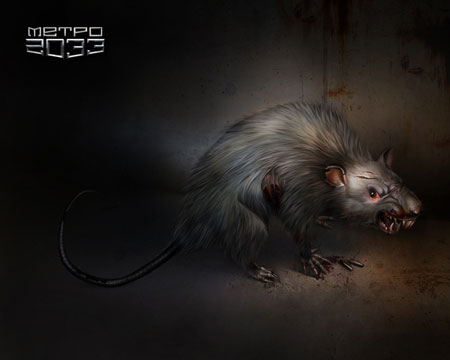
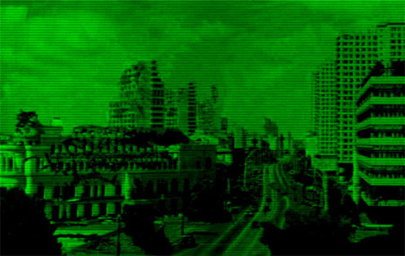
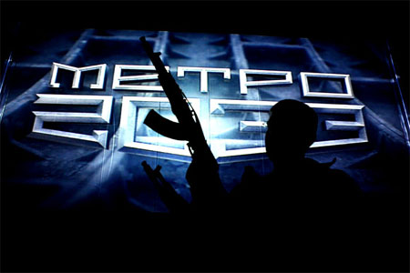

-
Сокольническая линия объявила войну Кольцевой
Добавлено 04.07 / Комсомольская Правда -
Книжное обозрение!
Добавлено 27.06 / Константин Рыков
«В категории художественных книг в обложке произошла смена лидера, к тому же вторую строчку занимает книга все того же издательства „Популярная литература“».
- Дмитрий Глуховский. Метро 2033.
- Эдуард Багиров. Гастарбайтер.
- Бернард Вербер. Империя ангелов.
- Патрик Зюскинд. Парфюмер.
- Дарья Донцова. Мачо чужой мечты.
- Татьяна Устинова. Отель последней надежды.
- Дарья Донцова. Каникулы в Простофилино.
- Суад. Сожженная заживо.
- Александра Маринина. Чувство льда.
- Хади. Искалеченная.
Говорят, что эти данные — самые крутые в России! Будем делать пресуху в Интерфаксе! Ура! :))
-
Первые бои с крысами!
Добавлено 26.06 / GooDoo IT  -
Фотоотчеты из подземелья
Добавлено 26.06 / Неизвестные авторы -
Новый Арбат 2033!
Добавлено 26.06 / Константин Рыков Сегодня Дмитрий Глуховский (dglu) встречается с последними выжившими читателями в Доме Книги на Новом Арбате в 17.00. Если вы пропустили предыдущие автограф-сессии, приходите туда! Ждем вас!
-
Фотоотчеты из блогосферы
Добавлено 25.06 / Яндекс.Блоги - http://auxent.livejournal.com/82920.html
- http://neblondinka.livejournal.com/88067.html
- http://im-foto.livejournal.com/242744.html
- http://www.streamphoto.ru/users/Jagger/198353/
- http://tancist.livejournal.com/27533.html
- http://mrrulez.livejournal.com/21283.html
- http://kotiy-pilat.livejournal.com/113389.html
- http://kuzia-shura.livejournal.com/22681.html
- http://www.pro-kurator.ru/post42932583
- http://palysandr.livejournal.com/324427.html
- http://scar-raver.livejournal.com/35218.html
- http://community.livejournal.com/metro2033/13430.html
- http://www.acidgarry.ru/temp/23-06-2007/album/index.html
- http://flickr.com/photos/maxdekko/sets/72157600434842079/show/